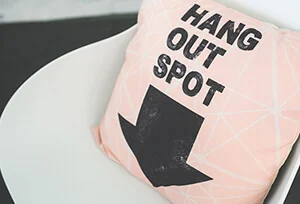

Вне города
Первый поход без гонки за километрами
Как выбрать короткий маршрут, оставить время на остановки и вернуться с желанием повторить.
История для ближайших выходных
Небольшой маршрут, удобный рюкзак и день, в котором можно никуда не спешить.
Читать историюЧетыре повода посмотреть на привычное чуть внимательнее.
Можно выбрать тему. А можно позволить истории найти вас.
Вне города
Как выбрать короткий маршрут, оставить время на остановки и вернуться с желанием повторить.
Вне города
Небольшая прогулка у воды, термос и полчаса без списка обязательных впечатлений.
Дом
Начать с одного растения, разобраться со светом и не превращать окно в склад горшков.
Вдохновение
Меньше попыток успеть на всё, больше внимания к тому, ради чего вы пришли.
За столом
Собрать простой ужин из знакомой еды и достать любимую посуду без особого случая.
Дом
Освободить небольшой угол комнаты для движения, чтения или нескольких минут тишины.
Мастерская
Несложный съёмный чехол с нахлёстом: подобрать ткань, снять мерки и собрать первую вещь для дома.
Мастерская
Дать готовой рамке новую жизнь: подобрать фон и собрать небольшую композицию из личных находок.
Мастерская
Небольшая декоративная фигурка из двух деталей — хороший повод достать оставшиеся лоскуты.
Попробуйте другое слово или уберите рубрику. Например, поищите «дом» или «утро».
Три небольших проекта, которые можно сделать своими руками.

Несложный съёмный чехол с нахлёстом: подобрать ткань, снять мерки и собрать первую вещь для дома.
Открыть мастер-классНебольшая декоративная фигурка из двух деталей — хороший повод достать оставшиеся лоскуты.
Открыть мастер-классДать готовой рамке новую жизнь: подобрать фон и собрать небольшую композицию из личных находок.
Открыть мастер-классПисьма Noémi
Истории для выходных, идеи для дома и повод ненадолго отложить дела.